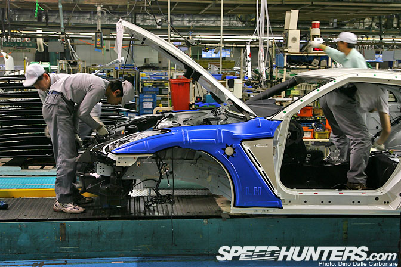
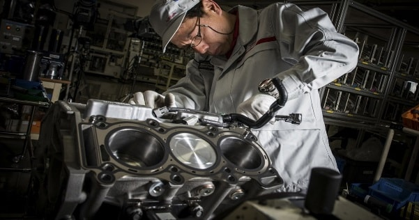

The GT-R begins at Yokohama plant, where the engine is put together. The engine is assembled away from the production automated production line. The engine is put together in a climate humidity controlled room, where specially skilled workers put together the most powerful GT-R engine. The Yokohama plant is producing 30+ GT-R's a day, But with the rise in popularity that number is bound to increase.
